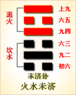
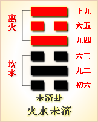

<!DOCTYPE html PUBLIC "-//W3C//DTD XHTML 1.0 Transitional//EN" "http://www.w3.org/TR/xhtml1/DTD/xhtml1-transitional.dtd">

<html xmlns="http://www.w3.org/1999/xhtml">
<head>
<meta content="text/html; charset=utf-8" http-equiv="Content-Type"/>
<title>周易第六十四卦：未济�?火水未济 离上坎下原文解释翻译-周易-国学�?/title>
<meta content="周易,未济�?火水未济,离上坎下" name="keywords"/>
<meta content="周易,未济�?火水未济,离上坎下，周易第六十四卦：未济卦 火水未济 离上坎下解释翻译�?（火水未济）离上坎下 《未济》：亨。小狐汔济，濡其尾，无攸利�?初六，濡其尾，吝�?九二，曳其轮，贞吉�?六三，未济，征凶。利涉大川�?九四，贞吉，悔亡，震用伐鬼方，三" name="description"/>
<link href="css.css" media="screen" rel="stylesheet" type="text/css"/>
</head>
<body>
<div class="gxlayout">
</div>
<div class="gxlayout">
<div class="ihead">
<div class="title"><a>周易</a></div>
<ul class="more fl">
<li>当前位置:<a>国学梦首�?/a> &gt; <a>国学经典</a> &gt; <a>经部</a> &gt; <a>四书五经</a> &gt; <a>周易</a> &gt;  周易第六十四卦：未济�?火水未济 离上坎下原文解释翻译</li>
</ul>
</div>
<div class="gxbl fl">
<div class="latitle">

<h1>周易第六十四卦：未济�?火水未济 离上坎下</h1>
<div class="lainfo"><span>作者：佚名</span> <span>全集�?a>周易</a></span> <span>来源：网�?/span> <span>[<a rel="nofollow" target="_blank">挑错/完善</a>]</span></div>
</div>
<div class="lacontent">
<div class="clearfix"></div>
<p style="text-align:center"></p>
<p style="text-align:center"><a>周易第六十四卦详�?/a></p>
<p style="text-align:center"><a>第六十四卦初六爻详解</a>　<a>第六十四卦九二爻详解</a>　<a>第六十四卦六三爻详解</a></p>
<p style="text-align:center"><a>第六十四卦九四爻详解</a>　<a>第六十四卦六五爻详解</a>　<a>第六十四卦上九爻详解</a></p>
<p><strong><a target="_blank">周易</a>第六十四卦未�?火水未济 离上坎下</strong></p>
<p>未济：亨，小狐汔济，濡其尾，无攸利�?/p>
<p>彖曰：未济，�?柔得中也。小狐汔济，未出中也。濡其尾，无攸利;不续终也。虽不当位，刚柔应也�?/p>
<p>象曰：火在水上，未济;君子以慎辨物居方�?/p>
<p>初六：濡其尾，吝。象曰：濡其尾，亦不 知极也�?/p>
<p>九二：曳其轮，贞吉。象曰：九二贞吉，中以行正也�?/p>
<p>六三：未济，征凶，利涉大川。象曰：未济征凶，位不当也�?/p>
<p>九四：贞吉，悔亡，震用伐鬼方，三年有赏于大国。象曰：贞吉悔亡，志行也�?/p>
<p>六五：贞吉，无悔，君子之光，有孚，吉。象曰：君子之光，其晖吉也�?/p>
<p>上九：有孚于饮酒，无咎，濡其首，有孚失是。象曰：饮酒濡首，亦不知节也�?/p>
<p><strong><a href="64_未济�?html" target="_blank">未济�?/a>卦象，水火未济的象征意义</strong></p>
<p>未济卦，这个卦是异卦相叠，下卦为坎，上卦为离。离为火，坎为水。火上水下，火势压倒水势，救火大功未成，故称未济�?/p>
<p>未济卦位�?a href="63_既济�?html" target="_blank">既济�?/a>之后，《序卦》这样解释道：“物不可穷也，故受之以未济。终焉。”既济卦是久则穷，所以必须重启生机，以显示变易而不穷的�?a target="_blank">易经</a>》原理，也就是以未济卦作为六十四卦的压轴。“未济”是尚未完成也尚未结《象》中解释未济卦：火在水上，未�?君子以慎辨物居方。这里指出：未济卦的卦象是坎(�?下离(�?上，为火在水上之表象。火在水上，大火燃烧，水波浩浩，水火相对相克，象征着未完�?君子此时要明辨各种事物，看到事物的本质，努力使事物的变化趋向好的方面，这样做则万事可成�?/p>
<p>未济卦象征事业未竟，属于中下卦。《象》中这样来断此卦：离地着人几丈深，是防偷营劫寨人，后封太岁为凶煞，时加谨慎祸不侵�?/p>
<p>【未济卦释义�?/p>
<p>此卦卦名为未济。未济就是没有渡过河的意思。其引申义为未完成、还没有终止。《序卦传》中说：“物不可穷也，故受之以未济。终焉。”这句话的意思是，各种事物不可能在终点完结，还会有新的开始，所以既济卦的后面是未既。到了未济卦，代表万事万物运行变化规律的六十四卦演算周期才算完备而终�?当然，另一个新的周期运行又开始了)。人们常常用“时运不济”来形容人的运气不佳，其实这“不济”指的便是《周易》的最后一卦——未济。可是未济卦只是重新开始新的轮回的过渡阶段，又何必悲伤�?</p>
<p>未济卦卦<a target="_blank">�?/a>：未济卦的卦画是三个阴爻三个阳爻，其排列顺序与既济卦的卦画顺序正好相反。未济卦与既济卦互为覆卦，又互为旁通�?/p>
<p>未济卦卦象：从卦象上分析，未济卦的上卦为离为火，下卦为坎为水，火在水上便是未济卦的卦象。表面上看好像与既济卦差不多，只是颠倒了一下。可实际上，却完全处于混乱状态中了。上卦离火向上升，下卦坎水向下流，不再具有相交之象。这说明火与水无法互补，无法达到平衡的状态。阴爻居于奇位，阳爻居于偶位，六爻皆不得位。象征一切秩序都已混乱。更严重的是，内卦臣子刚健，而外卦君王柔弱，所以君不像君，臣不像臣，国已不国�?/p>
<p>关键词：周易,未济�?火水未济,离上坎下</p>
<div class="clearfix"></div>
<div class="title"><div class="thot">解释翻译</div><span>[挑错/完善]</span></div><p><a href="64_未济�?html" target="_blank">未济�?/a>：亨通。小狐狸将要渡过河，打湿了尾巴。没有什么吉利�?/p>
<p>初六：打湿了尾部，倒霉�?/p>
<p>九二：拉车渡河，占得吉兆�?/p>
<p>六三：渡不了河。出行，凶险。有利于渡过大江大河�?/p>
<p>九四：占得吉兆，没有悔恨。周人动员出征，讨伐鬼方，三年取胜，得到大国段的赏赐�?/p>
<p>六五：占得吉兆，没有悔恨。打胜仗，抓俘虏，是君子的荣耀。吉利�?/p>
<p>上九：抓到俘虏，饮酒庆功。没有灾祸。打湿了头部，抓到俘虏，砍下他们的头�?/p>
<div class="title"><div class="thot">注释出处</div><span>[请记住我�?国学�?www.guoxuemeng.com]</span></div><p>①未济是本卦的标题。未济的意思与既济相反，全卦接着申说上一卦的道理，仍以“济”的意思作标题�?/p>
<p>②讫(qi)：用作“几”，意思是将要。济：渡水�?/p>
<p>③震：动�?/p>
<p>④大国：这里指殷�?/p>
<p>⑤光：光荣，荣耀�?/p>
<p>(6)是：用作“题”，意思是额部，这里代指头部�?/p>
<div class="clearfix"></div>
<div class="contextdhall clearfix">
<ul>
<li>上一篇：<a href="63_既济�?html">周易第六十三卦：既济�?水火既济 坎上离下</a> </li>
<li>下一篇：<a>周易第一卦乾卦详�?元，亨，利，贞�?/a> </li>
<li>全   文�?a>周易</a></li>
</ul>
</div>
</div>
<div class="clearfix mt20"></div>
</div>
</div>
<div class="clearfix mt20"></div>
<div class="gxlayout">
</div>
<script>
var _hmt = _hmt || [];
(function() {
  var hm = document.createElement("script");
  hm.src = "https://hm.baidu.com/hm.js?872034ded637616c5cf8e173a446bb0e";
  var s = document.getElementsByTagName("script")[0];
  s.parentNode.insertBefore(hm, s);
})();
</script>
</body>
</html>
